2021 FORD EXPLORER KING RANCH
Samochód z Ameryki
Przebieg 86000 km
Ford Explorer w wyjątkowej wersji King Ranch - najbardziej bogate wyposażenie w historii marki.
Przód samochodu posiada światła LED o wąskiej konstrukcji, wewnętrzna przestrzeń wypełniona jest łuskowatą siatką.
Najważniejszą różnicą w stosunku do opcji podstawowych jest to, że we wnętrzu zastosowano kosztowną brązową skórę premium. Cechą charakterystyczną tej konfiguracji jest zastosowanie w dekoracji naturalnego drewna afrykańskiego. Kabina wygląda przyzwoicie. Znajduje zastosowanie wszędzie: wykańczanie małych części, paneli drzwiowych, podłokietników, siedzeń w przednim i tylnym rzędzie.
Kabina wyposażona jest w osobną klimatyzację oraz podgrzewane przednie i tylne rzędy siedzeń.
W drugim rzędzie znajdują się fotele kapitańskie.
Niezależne zawieszenie sprężynowe.
Wyposażony w 3-litrowy silnik turbo o mocy 365 km.
Skrzynia automatyczna 10-biegowa SelectShift 10R60
Napęd: AWD + Terrain Management System
Koła z lekkich stopów 20 cali z oponami 255/55
Tapicerka skórzana dwukolorowa Del Rio w kolorze Mesia/Norias
Deska rozdzielcza i boczki drzwiowe obite skórą Del Rio
Wykończenie kabiny z naturalnego drewna Sapele
Fotele przednie multikonturowe podgrzewane, wentylowane i z masażem
Kanapa podgrzewana
Trzeci rząd siedzeń składany elektrycznie
Kierownica sportowa obszyta skórą, podgrzewana
Klimatyzacja automatyczna trzystrefowa
Dach panoramiczny dwuczęściowy (Twin Panel Moonroof)
Reflektory Signature LED
Światła przeciwmgłowe + światła tylne LED
Elektryczna klapa bagażnika
Lusterka zewnętrze elektryczne, podgrzewane, samościemniające się, z pamięcią ustawień
System multimedialny SYNC3 z pionowym wyświetlaczem centralnym 10.1 cala, nawigacją GPS sterowaną głosem, CarPlay/Android Auto, USB A/C, AUX, Bluetooth, ładowarką bezprzewodową smartfona
System nagłośnienia Bang & Olufsen (14 głośników)
Kamery 360 stopni
Szyby tylne przyciemniane
Relingi dachowe w kolorze satyny + poprzeczki dachowe
Poczwórne zakończenie układu wydechowego
Czujniki deszczu + ciśnienia powietrza w kołach (TMPS)
Dostęp bezkluczykowy we wszystkich drzwiach samochodu
System zdalnego odpalania samochodu
Hak holowniczy z najwyższą wersją pakietu Trailer Tow
Systemy Ford Co-Pilot360 + FordPass
System stabilizacji pojazdu przy wietrze bocznym
Samochód się znajduje w Kłajpedzie. Na kłamie bagażniku oraz zderzaku są nieduże uszkodzenia.
Vin: 1FM5K8LC6MGB77665
W razie pytań zapraszam do kontaktu pod numer Ivan
(Telegram)
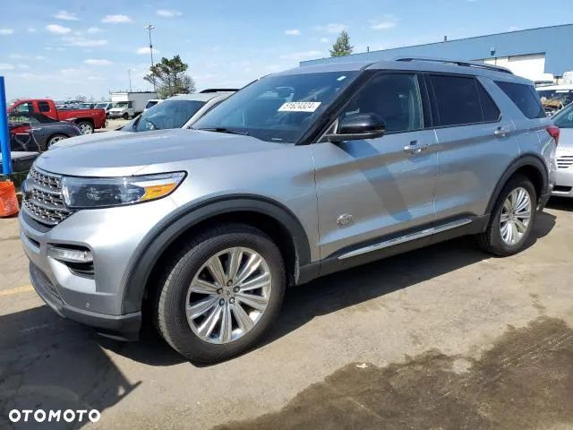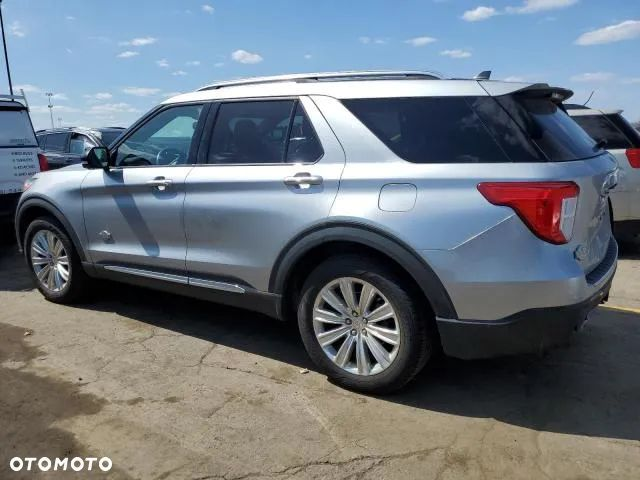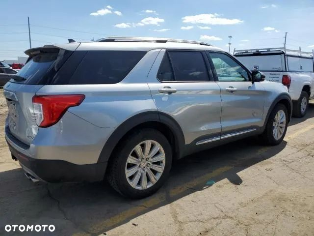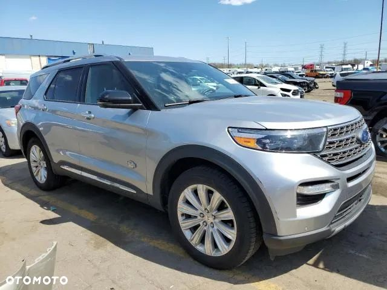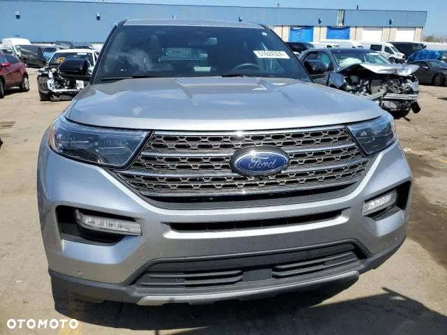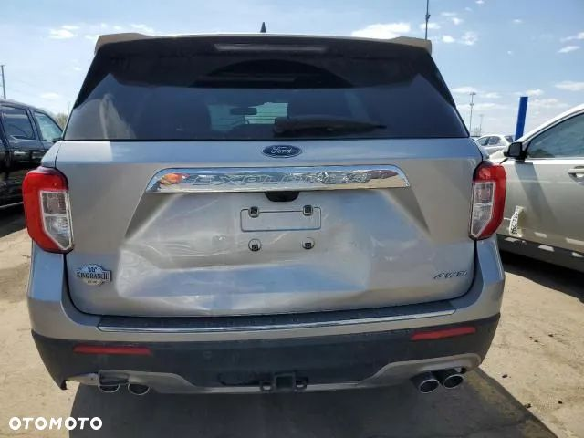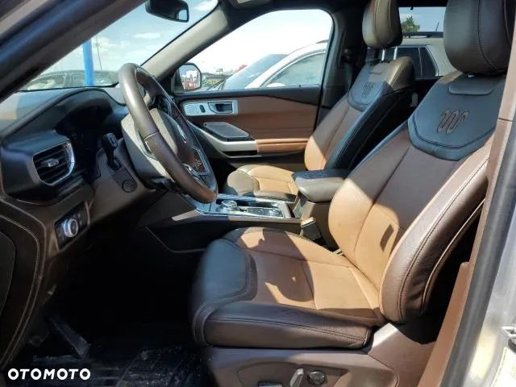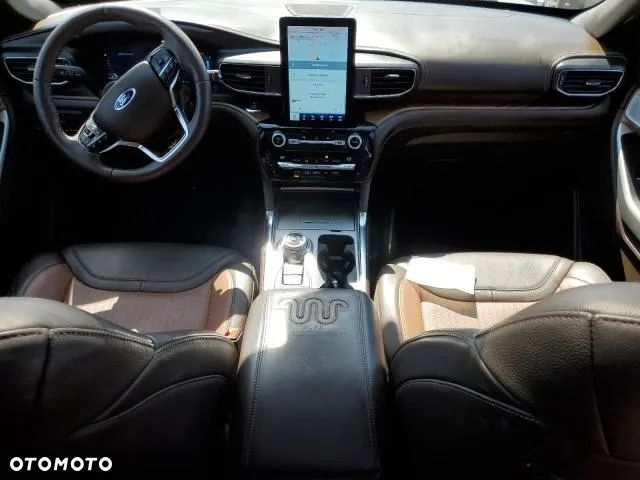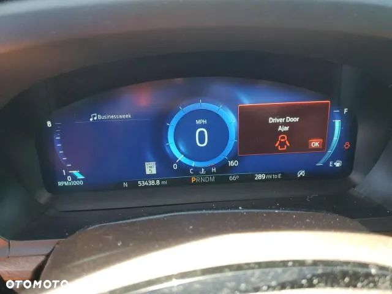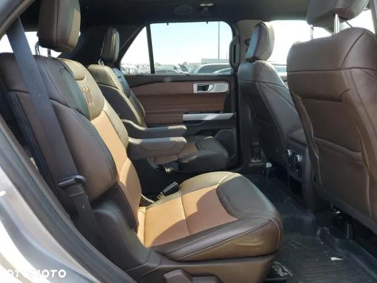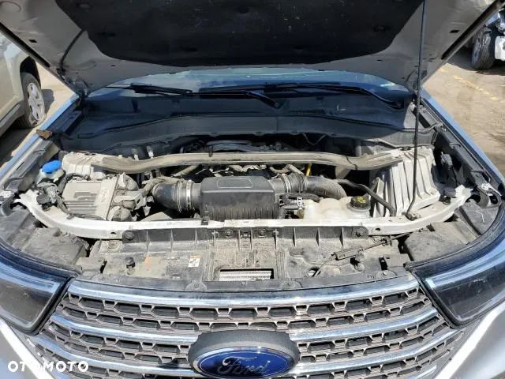